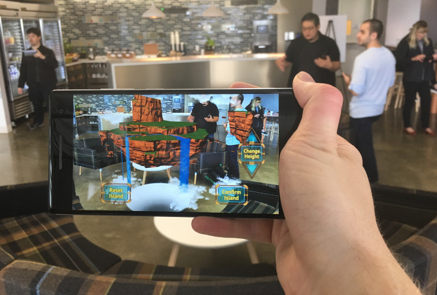

The Internet of Things
Virtual Reality & Augmented Reality
Voice Control
Some examples include:
-Smart Thermostats
-Precision Agriculture
-Disney's MagicBands/wearables
"energy providers want to lower demand during energy rush hours (peak hours)."
With smart thermostats, like Nest and Ecobee, energy companies are looking to use them as a way to incentivize off-peak usage.
Sproting events/venues
Wearbles
etc...
A recent Goldman Sachs research report predicts the VR/AR industry may become an $80 billion market by 2025.
test